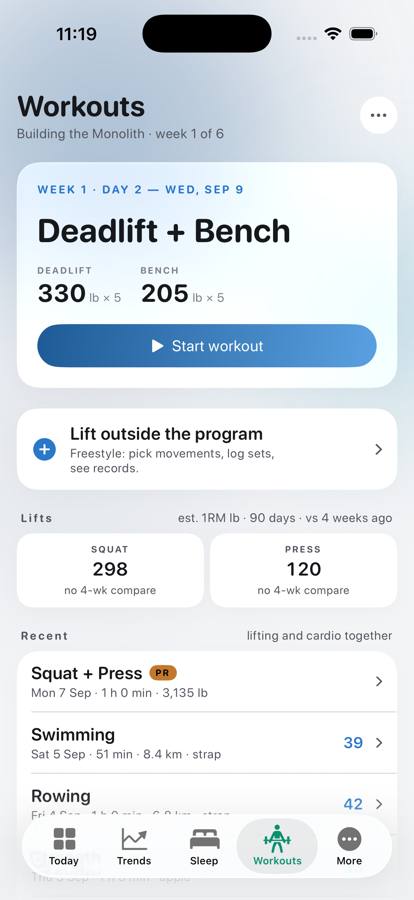
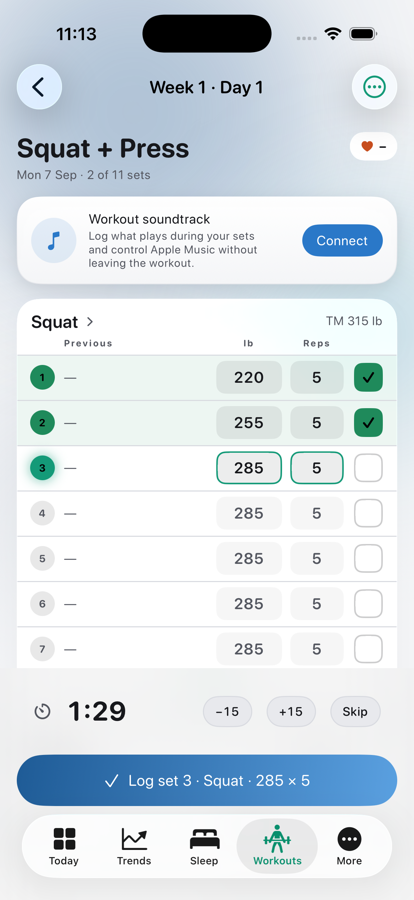
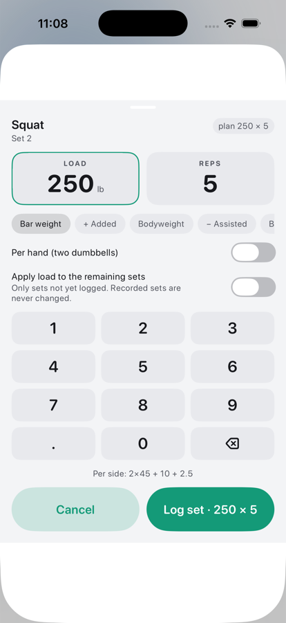
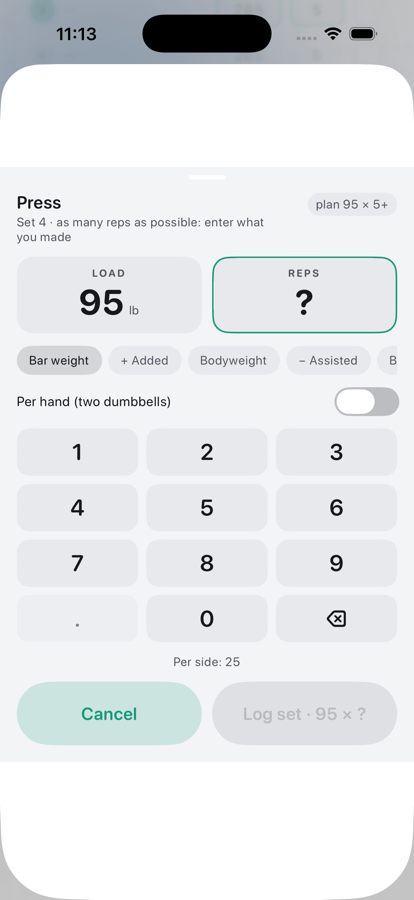
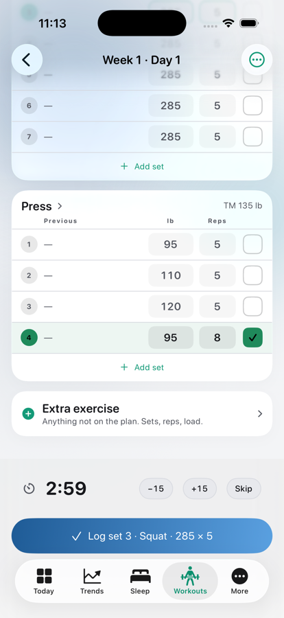

Debug build on the iPhone 17 Pro simulator with the demo dataset and a seeded Building-the-Monolith cycle (TMs 315 / 225 / 365 / 135 lb). Every set is a row with reps and load; the six review changes are in: explicit states and actions, opt-in carry-forward, five load modes, freestyle sessions, strict records, SQLite storage with a provenance-preserving import.

Hub after a session: next program day, freestyle row, lift e1RM tiles, unified Recent with a PR chip

Session ledger: done rows filled, active row outlined, planned rows dimmed; rest bar; one-tap log in the dock

Keypad: load and reps, five load modes, per-hand, explicit carry-forward, plate math

AMRAP set: the rep count must be typed before it can be logged

Press 95 × 8 logged; rest set by the set kind; Extra exercise row